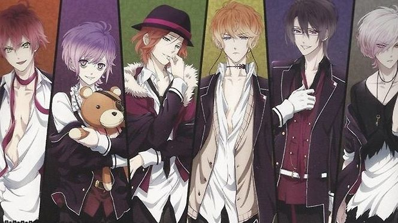

Diabolik Lovers
Trama principal
"Quando o pai de Yui Komori sai em viagem a trabalho, a garota se vê sozinha apenas com a orientação de
ir
à casa da família Sakamaki para ficar sob seus cuidados. Mas ao chegar à mansão, Yui descobre que os
seis irmãos Sakamaki são, na verdade, vampiros. Sádicos, os irmãos abusam psico e fisicamente, muitas
vezes se alimentando dela. Mas Yui encara e aceita a situação com otimismo, tentando desvendar os
mistérios do passado do clã Sakamaki - assim como de seu próprio passado..."
Ayato Sakamaki
Ayato Sakamaki (逆巻 アヤト Sakamaki Ayato) é o terceiro filho da família Sakamaki (e o quinto biológico). Ayato,
Laito e Kanato são filhos de Cordelia e Karlheinz, o Rei Vampiro.
Aparência

Ayato é um jovem delgado de cabelo rebelde avermelhado, olhos verdes e pele pálida. Usa um pequeno brinco
preto na orelha direita.
Em Haunted Dark Bridal, Ayato veste uma camiseta branca de gola e barra marrom, um cachecol também marrom e
uma jaqueta preta. Ele usa também uma calça jeans com um cinto e suspensórios caídos.
Em MORE,BLOOD, sua roupa consiste em um agasalho de capuz vermelho por baixo de uma jaqueta preta. Por baixo
do agasalho, sua camiseta é branca de gola larga preta em V. Sua calça é preta e ele usa uma corrente prata
no pescoço.
Seu uniforme escolar é o típico blazer preto com a camisa desabotoada por baixo e a gravata vermelha
desfeita em volta do pescoço. A perna direita de sua calça é dobrada até o joelho e ele calça um par de
tênis preto e vermelho.
Personalidade
Conhecido como o perturbador da casa, Ayato é um buscador de atenção e adora o mal. Adora intimidar e
provocar pessoas. Ele se refere a si mesmo a maior parte do tempo como "Ore-sama" (traduzido como
"o seu verdadeiro") e ele chama Yui「 乳 な し 」("Sem seios")
Ayato é bastante rebelde e tem paixão por dispositivos de tortura: como o Iron Maiden, e um dispositivo como
esse pode ser encontrado em seu quarto, que ele usa em vez de uma cama (espinhos removidos). Ele
também é o tipo que sempre se gabava de si mesmo, às vezes comandando todos a chamá-lo de Ayato-sama. Também
é observado que ele come muito (embora apenas se for sua comida favorita).
Ele é muito enérgico e adora esportes, sendo Basquete o seu favorito. Ayato afirmou que qualquer coisa está
bem enquanto houver um objetivo para alcançar e que o esporte é seu ponto forte.
O ruivo tambem tem dificuldade em expressar seus sentimentos e ele tende a ficar rapidamente com ciúmes de
qualquer
coisa. Ayato tende a esconder seus verdadeiros sentimentos com palavras insultantes. Ele geralmente fala mal
com sua mãe falecida.
História
Ayato é o trigêmeo mais velho, com o Laito sendo o mais novo e Kanato sendo o meio. Mesmo que o primeiro a
nascer seja Laito, a ordem dos trigêmeos é determinada por uma antiga tradição japonesa, onde o último a
nascer é considerado o mais velho, em um nascimento múltiplo, tornando-o o terceiro filho. Ayato foi o único
a chamar a atenção de sua mãe.
Ele foi quem sofreu a maior parte do abuso de sua mãe contra ele, no começo nem sequer tentando incomodar
com as coisas que Cordelia estava fazendo. O mais notável foi no primeiro jogo, onde Ayato teve um flashback
de sua própria mãe, afogando-o no lago como uma punição e que ele não vai se levantar até que ela lhe dissesse.
Nos outros jogos, Ayato foi maltratado por destruir uma flor dada a ela por Karlheinz. Então, em outro, ele
construiu um castelo de areia para se mostrar para Cordelia, mas ela só o destrói e diz que não valia a pena
mostrar se não fosse real. Mesmo que Ayato chamasse a atenção, ele estava sendo estritamente ferido por ela,
conforme seus desejos egoístas de fazer dele o herdeiro dos Sakamaki. As coisas que ela fez com ele levaram-no
a pensar em tentar matá-la, alimentando assim esse ódio.
Ayato tem o ódio mais forte para Cordelia de seus irmãos e foi o primeiro a se voltar contra ela quando ele
e seus irmãos cresceram, e isso levou a sua morte.
Curiosidades
1-Ele é zagueiro.
2-O tamanho do pé é de 26,5 cm.
3-Ele disse que sabe amarrar uma gravata, mas amarra seu laço em seu uniforme escolar com um estilo
diferente.
4-O seu takoyaki favorito é aquele que por fora ter que ser nítido enquanto o interior é realmente
macio.
5-De acordo com Character Interview, o primeiro lugar que ele verifica ao olhar para uma garota é o
peito.
6-Ele não é muito bom com estudos em geral.
